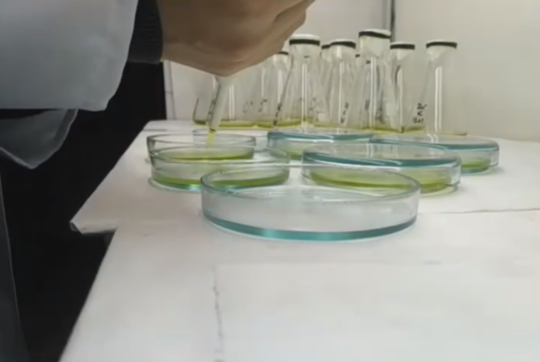
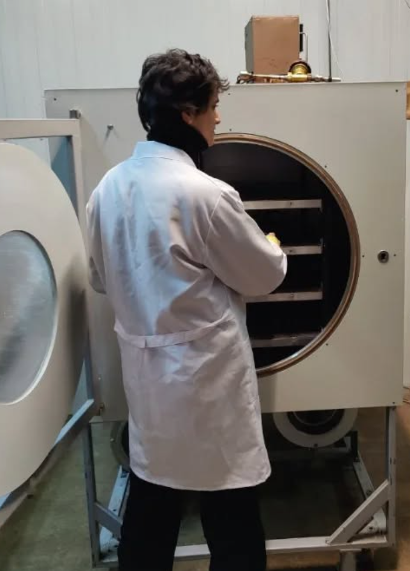

About Me

I specialize in artificial intelligence & ML, bioinformatics, pharmaceutical biotechnology, and molecular design. My expertise spans genome editing, drug development, and computational biology, with a focus on advancing biotechnology through innovative research.
- Artificial Intelligence: Completed the CS50 course in Python, AI with Python, and web development.
- Molecular Diagnostics: Experienced with GeneXpert, RT-PCR, and qPCR technologies.
- Genome Editing: Extensive work with CRISPR/Cas systems and SnapGene software.
- Pharmaceutical Technologies: Expertise in GMP standards, drug development, cultivation of Dunaliella microalgae, and wound treatment studies in Wistar rats.
- Programming: Proficient in Python (data structures, AI), R, Java, C++, JavaScript, HTML, CSS, and SQL.
As the founder and CEO of YID, I lead a team driving advancements in biotechnology through cutting-edge research and development.

Skills
- Programming Languages: Python, JavaScript, Java, C++, HTML, CSS, SQL, R, Bash
- Tools & Frameworks: TensorFlow, PyTorch, Flask, Django, Git, BitBucket
- Bioinformatics Software: SnapGene, Geneious, BLAST, Clustal, Mega, CHOP-CHOP, Schrödinger, MOE
- Technologies: Docker, Linux, NGS data analysis (Illumina data)
- Laboratory: Cultivation of unicellular microalgae, animal handling, excisional wound modeling, microscopy, image processing, data analysis, basic immunological and hematological assays, rational protein engineering, CRISPR gRNA design, CRISPR in vitro cleavage, electroporation of CHO cells, CRISPR-Based Gene Knockout
Education
- Taras Shevchenko National University of Kyiv: MSc in Biology and Biochemistry, Specialization: Bioinformatics and Structural Biology (2024 – Present)
- National Technical University "Kharkiv Polytechnic Institute": BSc in Biotechnology and Bioengineering, Specialization: Pharmaceutical Biotechnology (2020 – 2024, Graduated with Distinction)
- UBDS3 2025: Statistics, ML, Molecular Docking, Phylogenetics, Native Redesign of Proteins, Molecular Dynamics
- “CRISPR-Based Gene Knockout” course as a part of the XX International Summer School: CRISPR Knockout, , CRISPR gRNA design, CRISPR in vitro cleavage, electroporation of CHO cells
- Harvard CS50: Introduction to Computer Science, Web Development, AI with Python
- Kharkiv Secondary School №145: Graduated with Distinction (Gold Medal, 2020)
Research Experience
- V.N. Karazin Kharkiv National University, Institute of Biology: Research Assistant (Aug 2023 – Jun 2024) - Excisional wound healing in Wistar rats
- Institute of General and Emergency Surgery named after V.T. Zaitsev: Laboratory Intern (Feb 2023 – Aug 2023) - Post-COVID syndrome inflammation studies
- The Institute of Molecular Biology and Genetics of NASU: Bioinformatics & molecular biologist (Jul 2025 – nowadays) - Study of lncRNA for cancer treatment